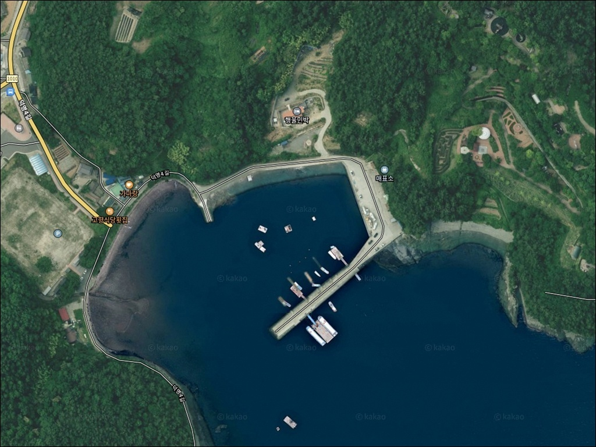
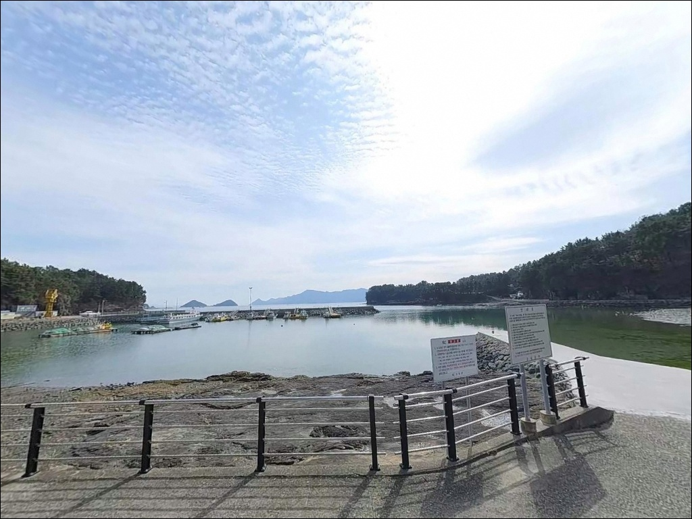
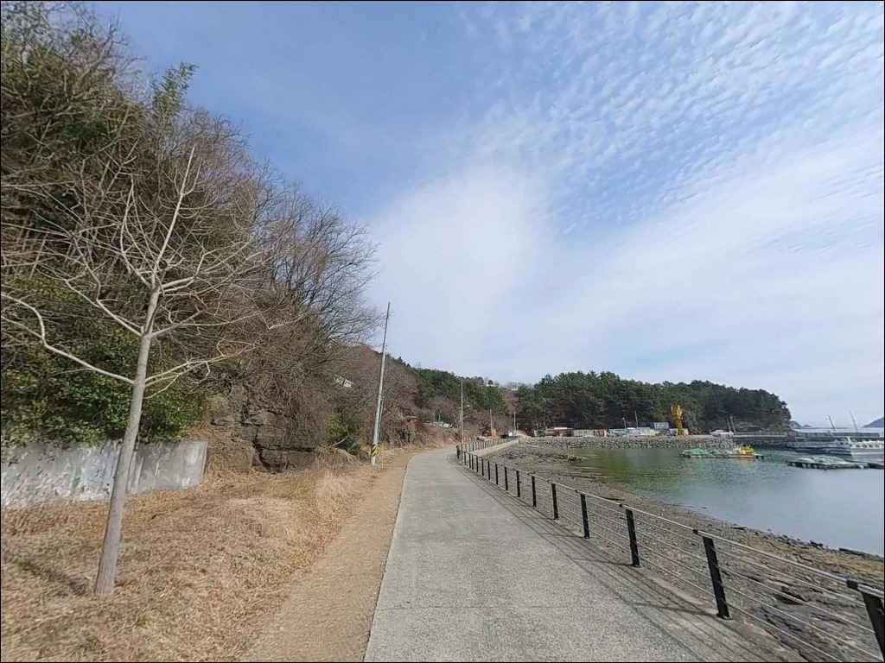
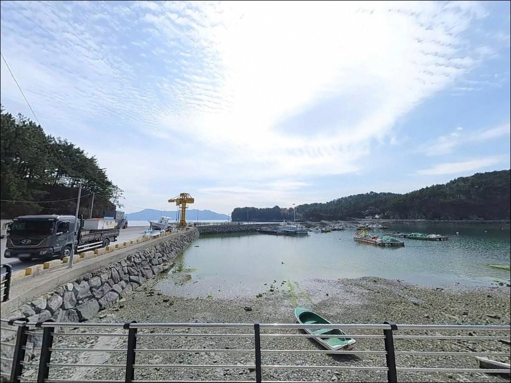
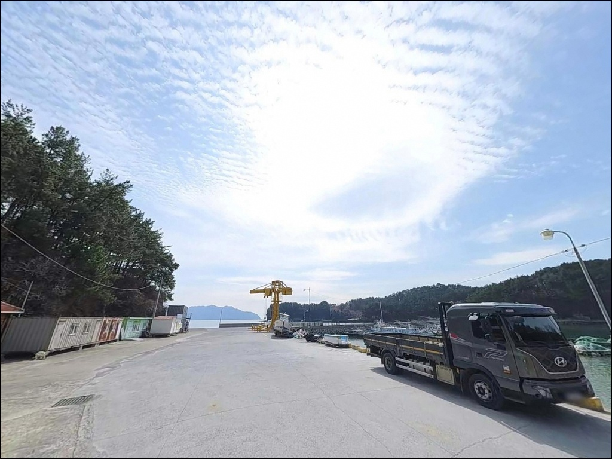
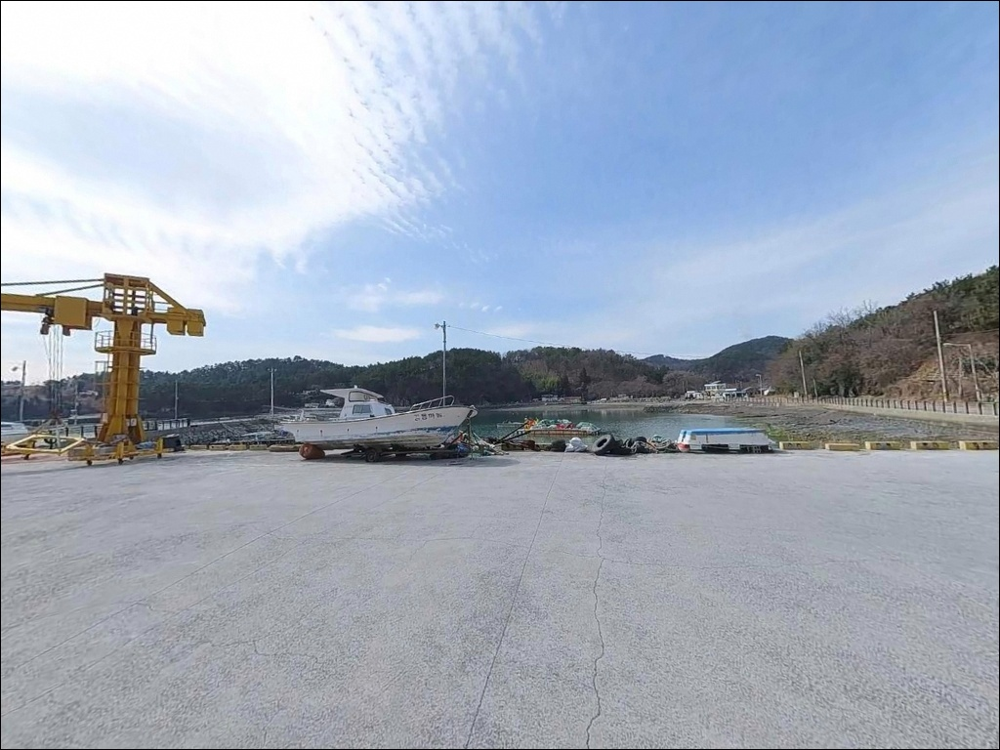
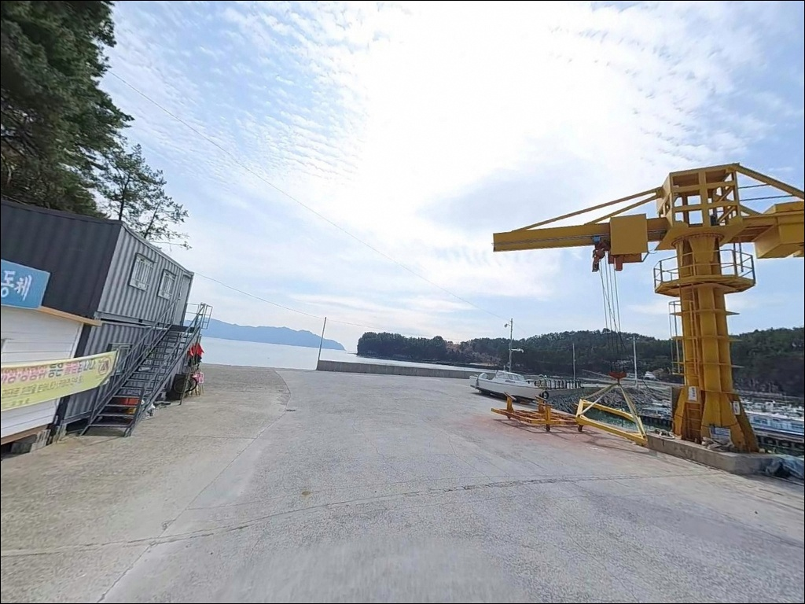
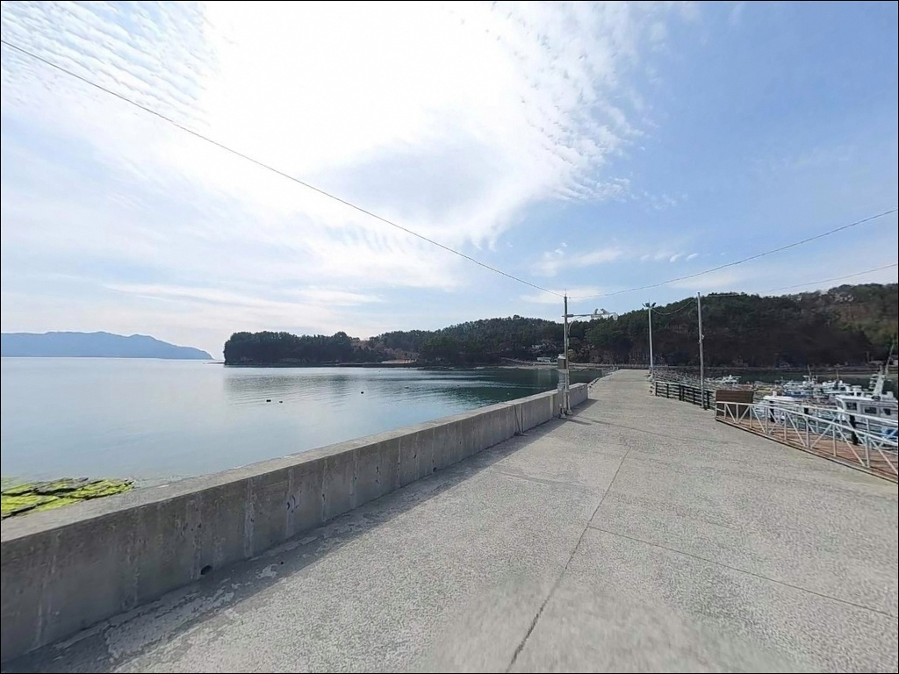
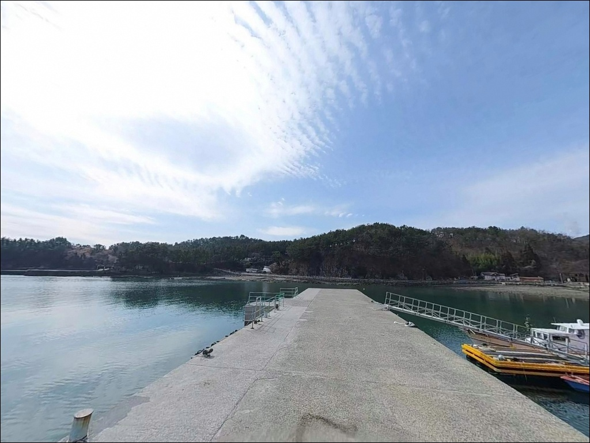

마을 안길 좁은 상족암선착장 낚시, 공룡박물관 주차장에서 갯바위 도보 진입


포인트 안내
상족암선착장
경남 고성군 하이면 덕명리 313-5
상족암선착장 방문에서 가장 많이 틀리는 판단은
선착장 바로 앞까지 차를 댈 수 있다는 전제입니다.
선착장 직전 마을 안길이 좁은 편이라
대형 SUV나 캠핑 차량은 회차 자체가
어려운 구간이 나옵니다.
주차 위치를 먼저 정하지 않으면
포인트 진입 전에 동선이 꼬이는 구조입니다.
이 글은 상족암선착장의
진입 동선과 주차 후보, 차박 운용 조건,
지형 기반 낚시 여건과 방식별 공략 포인트에 집중합니다.
조황 단정이나 특정 어종 보장은
이 글의 범위에 포함되지 않습니다.

1. 진입 동선과 차량 접근 조건
상족암선착장은 경남 고성군 하이면 중심부에서
자란만로를 타고 내려오다
상족암로로 접어드는 구조입니다.
상족암군립공원 방향 도로는
편도 1차선 포장도로로 정비되어 있어
공원 주차장 인근까지의 접근은 어렵지 않습니다.
문제는 선착장 직전 구간입니다.
공룡박물관·상족암 주차장 분기점에서
덕명리 선착장 방향으로 진입하는 안길은
마을 안길 수준으로 폭이 좁아
차량 교행이 어렵습니다.
대형 SUV나 루프탑 텐트를 얹은 차량이라면
공룡박물관 주차장에서 회차하는 방식이
안전합니다.
주차 후보는 세 곳으로 나뉩니다.
선착장에서 도보 5~7분 거리의
상족암 공영주차장이 가장 넓습니다.
덕명마을 진입부 공터에는
소형 차량 2~3대 정도가 가능한 공간이 있고,
공룡박물관 주차장은 약 500m 거리로
차박 거점으로 활용하기에 가장 현실적인
선택지입니다.

2. 차박 환경과 야간 체류 조건
상족암선착장 일대는
관광지형 포인트라는 특성이 차박 여건에 직접 영향을 미칩니다.
주말 낮 시간대에는 관광객 차량과 등산객 동선이
선착장 주변으로 집중되어
프라이버시 확보가 어렵습니다.
평일 야간은 방문 차량이 거의 없는 편이라
분위기가 달라집니다.
야간 조명은 마을 안길 구간까지만 설치되어 있고
선착장 끝단은 가로등이 없는 구간으로
이어집니다.
암반 지형 특성상 야간 이동 시
헤드랜턴은 선택이 아니라 필수입니다.
상족암군립공원 구역 내 지정 장소 외
야영·취사는 공원 관리 원칙을 따르므로
출발 전 고성군 또는 공원 관리 기관에
확인하는 편이 좋습니다.
차박을 계획한다면
공룡박물관 공영주차장을 거점으로 삼고
선착장까지 도보로 오가는 방식이
이 일대에서 가장 현실적인 운용 방법입니다.
선착장 바로 옆 체류형 차박보다
낚시 대기형 베이스캠프 방식에 어울리는 구조입니다.


3. 주변 편의시설 및 인프라 현황
반경 3km 이내에는 편의점이 없습니다.
하이면 일대는 편의 시설이
군 단위 중심지에 집중된 지역이라
출발 전 완전 자급 체제로 진입하는 것이
기본 준비입니다.
미끼, 채비, 식수, 간식까지
출발지에서 미리 챙겨야 합니다.
공룡박물관 인근에는 식당과 음료 판매점이
주간 시간대에 운영됩니다.
박물관 운영 시간 내에는 부대 화장실 이용도 가능합니다.
낚시용품이나 대량 보급이 필요하다면
남서쪽 약 8~10km 거리의
삼천포(사천시) 방향을 활용하는 것이
효율적입니다.
삼천포권에는 낚시용품점과 24시간 편의점,
주유소가 밀집해 있습니다.

4. 방문 전 반드시 챙겨야 할 준비사항
출발 전 가장 먼저 확인할 것은
물때와 기상입니다.
상족암선착장은 한려수도 내만권이지만
남동쪽으로 외해 노출도가 있는
반내만 구조라
기상에 따라 파도와 너울 영향을
직접 받는 경우가 있습니다.
기상청 해상 특보와 파고 예보를
출발 당일 아침 다시 확인하는 것이
헛걸음을 막는 기본 조건입니다.
갯바위와 암반 구간이 포함된 포인트라
채비 손실이 잦은 편입니다.
에깅 채비는 여분을 넉넉하게 준비하고,
원투 채비도 바닥에 걸리는 경우를 감안해
채비 소모량을 크게 잡는 편이 좋습니다.
상족암군립공원 구역 내 갯바위 접근 시
탐방로 이탈 금지 원칙이 적용됩니다.
이 일대 해안은 천연기념물 411호
공룡발자국 화석 산지이므로
암반 위 장비 설치나 쓰레기 투기는
절대 금지 사항입니다.
구명조끼 착용과 야간 헤드랜턴 지참은
갯바위 포인트의 기본 안전 장비입니다.

5. 외해 노출형 암반 지형이 만드는 낚시 여건
상족암선착장은 퇴적암 층리 기반의
낮은 암반과 기암절벽이 교차하는 해안선에 붙어 있습니다.
선착장 우측(동쪽)으로 상족암 방향 갯바위 접근이 가능하고,
선착장 끝단과 갯바위 돌출부 주변에서
수심이 급격히 변하는 구간이 형성됩니다.
선착장 주변 수심은 3~5m 정도로
얕은 편이지만,
외항 방향으로 원거리 투척 시
7~9m 이상 확보되는 구조입니다.
해역은 한려수도 내만권에 속하면서도
남동쪽으로 외해 노출도가 있는
반내만 성격을 동시에 갖습니다.
선착장 끝단에서 조류 흐름이 형성되고,
인근 암반과 수중여 구간은
어류의 은신처와 먹이 활동 조건이
자연스럽게 갖춰지는 지형입니다.
갯바위 암반 발판은 평탄한 구간과
급경사 절벽 구간이 혼재합니다.
포인트로 삼을 수 있는 자리는
선착장 끝단과 갯바위 돌출부 두 곳으로
압축되는 편이며,
조류 변화가 큰 구간을 먼저 읽고
자리를 잡는 것이 이 포인트를
제대로 활용하는 방법입니다.
출조 전에 상족암선착장·덕명항 일대
최신 조황을 반드시 검색해 보시기 바랍니다.


6. 지형 조건에 맞는 낚시 스타일 제안
이 포인트에서 지형 조건과 가장 잘 맞는 방식은
찌낚시입니다.
갯바위 암반 구조와 수중여가 발달한 지형에서
들물 시간에 맞춰 선착장 끝단이나
갯바위 돌출부를 공략하면
감성돔과 볼락 입질을 기대해 볼 수 있습니다.
경남 고성 내만권은
가을~겨울 감성돔·볼락 찌낚시 패턴이
형성된 해역입니다.
에깅도 이 포인트 구조에 잘 맞습니다.
선착장 슬로프~갯바위 경계 구간은
수심 변화가 빠른 구간으로
갑오징어 에깅 포지션으로 활용 가능합니다.
무늬오징어 또한 내만권 서식 확인 사례가 있는 해역으로,
여름~가을 에깅 시즌에 함께
노려볼 수 있는 방식입니다.
바닥 걸림이 있는 암반 구간이 많아
에기 소모를 감안한 채비 준비가 필요합니다.
원투낚시는 선착장 안쪽
모래·자갈 혼합 구간을 향해 던지는 방식이 어울립니다.
바닥 지형이 비교적 단순한 구간에서
붕장어, 도다리 계열을 기대할 수 있으며,
야간 원투 낚시에도 적합한 구조입니다.
외항 방향으로 멀리 보낼수록
수심이 확보되므로 비거리를 충분히 확보하는 것이
기본 전략입니다.

7. 대안 포인트와 플랜 B 동선
상족암선착장 진입이 여의치 않거나
낚시 집중 환경을 원한다면
덕명마을 방파제가 첫 번째 대안입니다.
선착장 서쪽으로 약 700~800m 거리에 있으며,
낚시 포인트 데이터베이스에 등록된 공식 포인트로
발판이 선착장보다 안정적이고
접근 동선도 단순합니다.
낚시 집중도를 높이고 싶다면
맥전포항 방파제로 이동하는 것이
이 해역에서 현실적인 선택입니다.
상족암선착장에서 차로 약 10분,
남서쪽 3km 거리에 있으며,
경남 고성 낚시 커뮤니티에서
이 일대 대표 방파제로 자주 언급됩니다.
방파제 규모가 크고 원투·찌낚시 발판이
정리된 구조라 처음 방문자에게도
운용이 수월합니다.
차박 거점을 바꾸고 싶다면
통영 방향 소형 항구 주변 공터나
상족암 오토캠핑장을 대안으로 검토할 수 있습니다.
오토캠핑장은 선착장에서
가장 가까운 합법적 야영 공간으로,
스텔스 차박보다 쾌적한 체류를
원한다면 우선 고려할 만한 선택지입니다.

주차와 공원 규정을 먼저 정리하면
상족암선착장의 낚시 여건이 보입니다
갯바위 암반 찌낚시나 에깅을 즐기는 낚시인이라면
상족암선착장의 지형 조건은
잘 맞는 구조입니다.
수중여와 암반이 발달한 해안선,
조류 흐름이 살아 있는 선착장 끝단은
찌낚시·에깅·원투 복수 방식으로
공략할 수 있는 여건을 갖추고 있습니다.
다만 상족암선착장은 정보보다 현장 파악이 먼저 필요한 포인트입니다.
진입 동선, 주차 위치, 군립공원 구역 야영 규정까지
사전에 정리하지 않으면
낚시 자리에 앉기도 전에 시간을 소비하게 됩니다.
공룡박물관 주차장 거점 확보 → 선착장 도보 접근,
이 동선을 먼저 결정하고 출발하면
현장에서 낭비 없이 움직일 수 있습니다.
관광객이 빠진 평일 야간,
들물 타이밍에 갯바위 발판에서
찌낚시 한 대 드리우고 차박으로 하룻밤 버티는 방식이라면
상족암선착장은 충분히 기억에 남을 출조지가 될 수 있습니다.